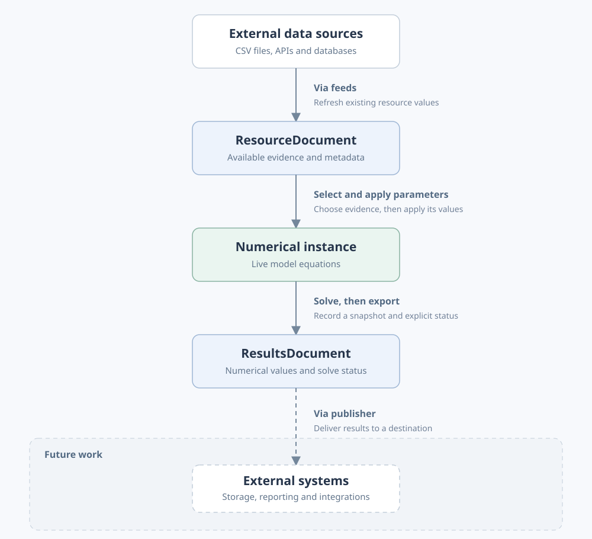

Feeds supply resources for a model
Revised 17 November 2026 · Feeds implemented; output channels remain proposed
External data enters through feeds. Each feed discovers the tags it can supply and reads their values in bulk. The configured runtime collection combines those values with the resource metadata already held by the application, producing a fresh resource document.
A resource carries a tag, model variable path, value, units, trust and optional uncertainty. Some resources are selected as parameters to constrain a model. Fetching a resource does not automatically select it or fix a variable.

Data flow overview; publishing remains future work. Open full-size diagram.
from pydantic import BaseModel
from multifidelity.model_language import FeedRegistry, FeedDocument
class PlantConfig(BaseModel):
columns: dict[str, str]
class PlantFeed:
def __init__(self, config: PlantConfig, client):
self.config, self.client = config, client
def get_config(self) -> PlantConfig:
return self.config
def get_tags(self):
return tuple(self.config.columns)
def read(self, tags):
columns = self.config.columns
values = self.client.read_many([columns[tag] for tag in tags])
return {tag: values[columns[tag]] for tag in tags}
registry = FeedRegistry()
registry.register("plant_api", lambda config: PlantFeed(config, client),
config_type=PlantConfig)
document = FeedDocument(feeds=[{
"name": "plant", "provider_type": "plant_api",
"config": {"columns": {"inlet_flow": "FT101"}},
}])
feeds = registry.create_feeds(document)
resources = feeds.read(resources)
feeds.get_document().write_json("feeds.json")
Configuration stays typed in Python
Each feed defines its own Pydantic config model and returns it from get_config(). The runtime collection serializes that configuration as JSON for storage and display. Runtime clients and credentials stay outside exported configuration.
FeedRegistry lists available plugins under stable names and exposes their config schemas. Registration does not construct a feed or discover tags. FeedDocument contains a feeds array: each entry names an instance, selects its provider_type and supplies JSON config. create_feeds() validates all plugin names and configs before constructing a FeedCollection. That collection discovers tags and routes bulk reads; tags are not duplicated in the document.
Blocks, models and parameters
A block defines an interface and offers alternative formulations. A root block with a formulation selected at each participating occurrence defines a model. ModelDocument stores those recursive choices; build_model() combines it with the root block to construct a live numerical instance.
ParameterDocument records which resource tags constrain that model, including initial conditions and any replacements of canonical inputs. Selection, application and numerical solving remain separate operations. ResultsDocument records the resulting numerical snapshot and its explicit solve status.
Connections have their own tabs
The Feeds tab lists configured instance names and plugin types, with a JSON configuration editor. Python validates typed settings and discovers tags when the configured plugins run. The other implemented tabs are Blocks, Model, Resources and Results.

Output channels remain a proposed addition. A channel would subscribe to variable paths and receive one dictionary through write(values) after a successful solve. Naming and formatting for its destination would stay in its Python code; a delivery failure would be reported separately from solve status.

WorkspaceDocument bundles model_document, resources, results and optional feeds. These artifacts can be inspected offline. Re-execution requires the application to supply the registered feed classes and their runtime dependencies.
Feeds and the Feeds tab are implemented. Output channels and an automatic Simulation.solve() wrapper are not implemented.